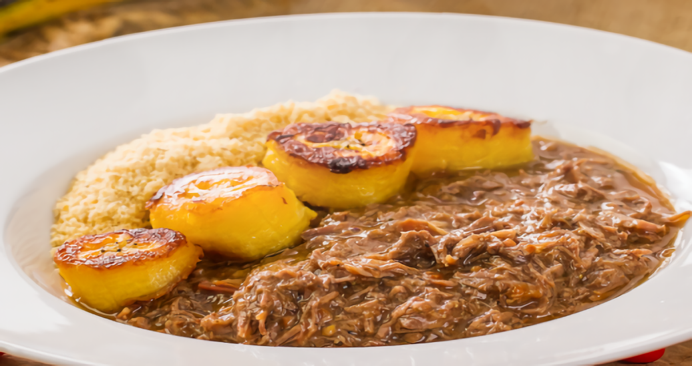

1º Festival Gastronômico Sabores do Campo na Cidade!
Contagem regressiva para o festival
dias
horas
min
seg
PROPOSTA
Imagine o sabor do campo chegando até você, no coração da cidade. O 1º Festival Gastronômico “Sabores do Campo na Cidade” é mais que um evento — é um encontro de mundos. De um lado, produtores locais trazendo ingredientes fresquinhos, direto da roça. Do outro, chefs urbanos prontos para transformar tudo isso em experiências únicas. Venha conhecer, provar, aprender e se conectar. Porque quando o campo e a cidade celebram juntos, quem ganha é todo mundo.
Sabores com História
BARREADO
Um prato de carne cozida lentamente, geralmente com costelas de boi, acompanhado de pão, arroz e farinha de mandioca.
Saiba maisVaca Atolada

Um prato com carne bovina, mandioca, linguiça e outros ingredientes, cozido em fogo baixo.
Saiba maisCARNE DE ONÇA

Uma carne seca cozida em fogo baixo, também conhecida como carne de sol ou carne desfiada.
Saiba maisPÃO NO BAFO

Pão cozido no vapor, frequentemente com carne, um clássico dos Campos Gerais.
Saiba maisBOLO DE PINHÃO

Bolo de Pinhão: Bolo feito com pinhões cozidos e moídos, farinha de trigo, açúcar, ovos e manteiga.
Saiba maisDOCE DE PINHÃO

Doce tradicional feito com pinhões, açúcar e água, muito apreciado na região.
Saiba maisCHEFS CONVIDADOS
Quatro chefs convidados para o festival celebram a união do campo e da cidade na gastronomia: Ana Terra resgata tradições locais, Bento inova com ingredientes rústicos, Cora foca na sustentabilidade, e Dante explora a fusão de sabores regionais e internacionais. Cada um trará experiências únicas ao evento.
SOBRE NÓS
O "Festival Gastronômico: Sabores do Campo à Cidade" celebra a união entre a produção local e a culinária urbana, valorizando ingredientes regionais e conectando produtores com consumidores. Sua missão é promover a cultura alimentar local, destacando a autenticidade e a diversidade da gastronomia da região.
LOCAL DO EVENTO
Rod. Dep. João Leopoldo Jacomel, 10454 - Vila Amélia, Pinhais - PR, CEP: 83320-005.
REGRAS
- Apresentação do ingresso obrigatória.
- Documento de identificação com foto pode ser solicitado.
- Menores de idade devem estar acompanhados dos pais ou responsáveis.
- Conduta respeitosa é esperada de todos.
- Seguir as orientações da equipe de segurança.
- Câmeras e celulares para uso pessoal são permitidos.
- Bolsas e mochilas podem ser inspecionadas.
- Comportamento agressivo ou desrespeitoso é proibido.
- Drogas ilícitas e armas são proibidas.
- A participação no festival implica na aceitação destas regras.
ENTRE EM CONTATO CONOSCO!
E-mail: FestivalGastronomicoCC@gmail.com
Telefone: (42) 9 885672-0908
Redes Sociais: @FestivalGastronomicoCC